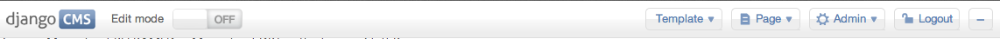
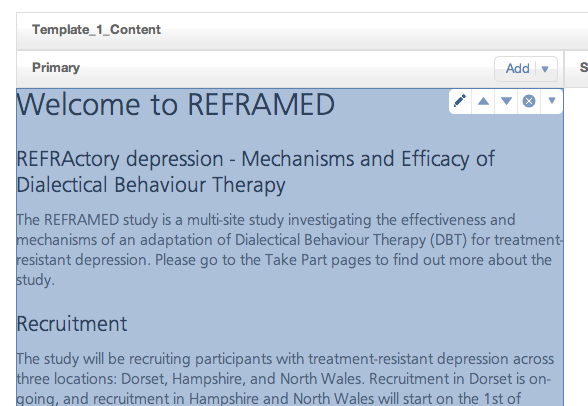
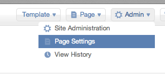
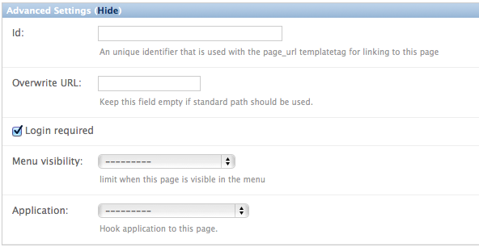

Alongside Signalbox, we use a content management system to create pages which are visible on the ‘front end’ or public facing website.
You can see a list of these pages as /admin/cms/page/. In addition, once you have logged in, you can press the + icon in the top right hand corner of most pages to edit the content on them. The icon looks like this:
Clicking it brings up an editing toolbar like this:
From which you can turn on editing, and also access the admin site. Once you have turned edit mode on, roll over content and click the edit icon shown in the image below:
When adding content to the website, you can use markdown syntax to style content (see markdown for more details).
Additional functionality has been added to the CMS app to enable some pages to be protected from public view. These pages are only accessible by the study team (i.e. researchers, research assistants, assessors, and clinicians).
To make a page on the website protected, use the edit bar to access the page settings:
Scroll to the bottom of this page and click the ‘advanced settings link’. Then enable the ‘login required’ checkbox, and save the page.
Protecting a page which has sub-pages (i.e. child pages which appear lower than it in the hierarchy of pages) will make all sub-pages protected.
Warning
If in doubt CHECK! Logout of your account and make sure the page really is protected.
Warning
Although protected from public view, the website is NOT to be used for sensitive content (e.g. correspondence, risk reports etc).
This system can contain confidential and often very private data. Pick a strong password, and store it in a password locker.
See http://xkcd.com/936/.
Auto generate a password here: http://rumkin.com/tools/password/diceware.php.
The preferred solution is Keepass http://keepass.info/download.html.
..note:: If you download the portable version onto a memory stick you can use it anywhere
Markdown syntax is used extensively throughout the application to format text for display. Markdown is a simple format which allows headings, lists and links to be created without knowledge of HTML.
For more information on markdown see: MarkdownSyntax.
Examples of elements which use markdown syntax for formatting: